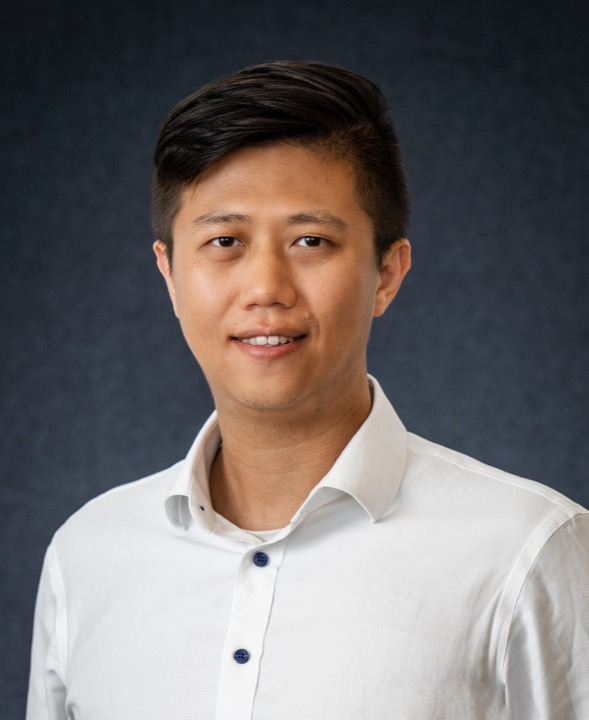

NEUROREHABILITATION ENGINEERING
Chengjun Huang, Ph.D. 黄成君
Associate Professor
School of Rehabilitation Sciences and Engineering
University of Health and Rehabilitation Sciences
Email: huangchengjun@uhrs.edu.cn
Qingdao, Shandong, China
Short Bio
Chengjun Huang is an Associate Professor and master’s supervisor in the School of Rehabilitation Sciences and Engineering at the University of Health and Rehabilitation Sciences, and a young core researcher at the Shandong Engineering Research Center for Motor Function Rehabilitation. He currently serves as Deputy Director of the Human Resources Office. He is a Taishan Young Scholar and a recipient of the Shandong Excellent Young Scientists Fund (Overseas).
He received his Ph.D. in Biomedical Engineering from the University of Science and Technology of China in 2017, and subsequently conducted postdoctoral research at the University of Texas Health Science Center at Houston and its affiliated TIRR Memorial Hermann rehabilitation hospital, and at Baylor College of Medicine. His research focuses on using surface electromyography and electroencephalography to characterize neuromuscular function and brain states, providing quantitative methods for neurorehabilitation assessment and intervention.
Recent News
- 2026/07Our simulation study on motor unit distribution and muscle fiber conduction velocity estimation appeared in Journal of Electromyography and Kinesiology.
- 2026/03Our study of intermuscular coherence networks after stroke appeared in IEEE Transactions on Neural Systems and Rehabilitation Engineering.
- 2025/12Our teaching case on AI-enabled flipped classroom practice using circuit theorems received First Prize in both the Eastern Regional Competition and the National Final of the Second National Smart Teaching Case Competition for University Teachers in Electronic Information Disciplines (Haopu Cup).
- 2025/01Started an NSFC Young Scientists Fund project: “A new exploration of noninvasive detection of post-stroke neurogenic muscle pathology based on neuromuscular innervation zone distributions.”